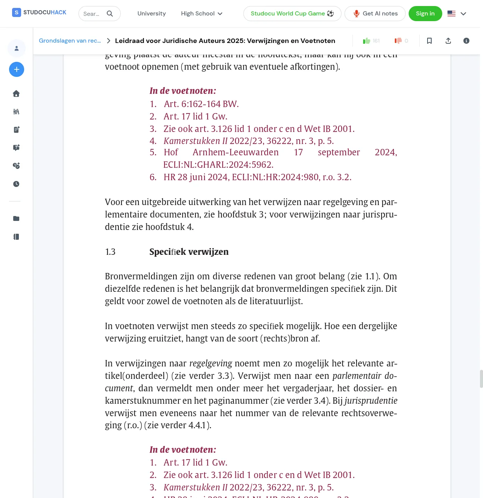
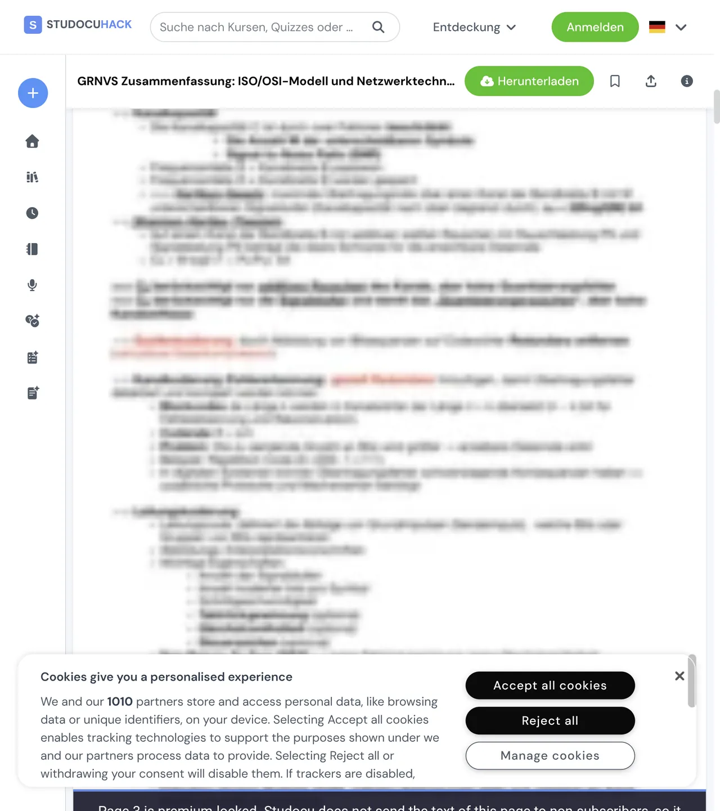

Removes the premium blur and the upsell chrome from Studocu documents, and downloads them as one complete PDF.
A browser extension for studocu.com, studeersnel.nl, studocu.vn and studocu.id. Chrome, Brave, Edge and Firefox 142 or newer. No account, no server, no data collection.
Download the latest release Source on GitHub
Every release carries a .zip for Chrome, Brave and Edge and an
.xpi for Firefox. Neither goes through a store, so each is loaded from
the file; the steps take a minute.

What it does
The document, without the parts that sell you something
- The blur goes.
- Every page whose content Studocu sends to your browser is shown sharp, and kept sharp while the viewer re-renders around it. Blur removal is the one thing that is always on.
- The upsell chrome goes with it.
- The premium banners, the badges, the Upgrade button and the modal that covers the document are removed before they can flash. The ads and the "Ask a question" AI toolbar are hidden as well.
- Download as one PDF.
- A Download button above the pages captures every page, text and figures both, and prints the whole document through the browser's own Save as PDF. Each sheet takes the size of the page it carries, so a document with mixed orientations comes out the way it went in.
- Every page loads on open.
- The viewer normally renders a page only as you scroll past it. The extension walks the document once so every page is rendered and ready, then puts you back where you were.
- Each extra is a switch.
- The download button, the automatic page loading, ad hiding, the AI toolbar and the logo replacement can each be turned off from the toolbar popup. Settings live in the browser's own synced storage and apply the next time a document loads.
What it cannot do
A page the site never sends cannot be unblurred
Studocu renders a native PDF as two separate layers per page: a background image holding the figures (rules, table borders, coloured boxes) and a separate HTML text layer holding the words. The two are authorised separately, and on a premium document the site never sends the text layer of the locked pages to the browser at all. No extension can un-blur those pages, because the words are not on your computer in any form.
Pages in that state keep the site's blurred preview and carry a label that says so, in the viewer and in the download, so you can tell a locked page from a page that failed to load. Every page whose text the site does send is unlocked in full, and the browser console lists exactly which pages could not be recovered.

Install
From a release, in either browser
Download the archive for your browser from the latest release. The version number is part of the file name.
Chrome, Brave, Edge
- Download
studocuhack-vX.Y.Z.zipand extract it somewhere you will keep it. - Open
chrome://extensions(Brave:brave://extensions, Edge:edge://extensions). - Turn on Developer mode, top right.
- Click Load unpacked and pick the extracted folder, the one that contains
manifest.json.
To update, extract the new zip over the old folder and press the reload icon on the extension's card.
Firefox
- Download
studocuhack-vX.Y.Z.xpi. - Open
about:addons, click the gear icon, choose Install Add-on From File and pick the file. - Open a Studocu document, click the puzzle icon in the toolbar, open the extension's settings and choose Always Allow on studocu.com, and on studeersnel.nl, studocu.vn or studocu.id if you use them.
Release builds of Firefox only install add-ons Mozilla has signed, and the notes
on each release say whether the attached .xpi is. An unsigned one,
like a build you make yourself, needs Firefox Developer Edition or Nightly with
xpinstall.signatures.required off, or a temporary load through
about:debugging.
Downloading a document
Three steps, and the tab stays in front
- Open the document and click the blue Download button above the pages.
- A preview opens in the same tab and captures every page on its own. It reports "Capturing pages X / N" and then "Embedding images X / N". Keep the tab in the foreground: a browser throttles a background tab and the capture stalls.
- When it finishes, click Print / Save as PDF, or press Ctrl+P (Cmd+P on a Mac), and choose Save as PDF as the destination.
Esc, or the Close button, leaves the preview.
How it works
Two layers per page, fetched from a CDN that signs its URLs
Studocu's viewer is pdf2htmlEX output wrapped in a React virtual scroller. Each page is a background image plus a positioned HTML text layer, both fetched from a CDN with signed URLs that are embedded in the page. The extension reads those signed parameters, works out which pages the server will actually serve, fetches the full-resolution assets for those, and labels the rest. The blur itself is a CSS filter the extension strips and keeps stripped as React re-renders.
The architecture document has the CDN layout, the access model and the reasoning behind the premium-locked detection, for anyone who wants to check the claim above before trusting it.
Build from source
Plain files, one command to package them
Node 20 or newer. The extension has no runtime dependencies and no bundler: the content scripts load in manifest order and share one namespace.
git clone https://github.com/danieltyukov/studocuhack.git
cd studocuhack
npm install
npm test
npm run build
That runs the unit and fixture tests and packages src/ into
dist/. Load src/ as an unpacked extension to run the
working copy directly, or let web-ext launch a browser with it through
npm run start:firefox or npm run start:chromium.
CONTRIBUTING
covers the layout and how a release is cut.
When something comes back
Studocu renames its classes; the fix is a selector
The site changes its CSS class names from time to time. When a banner or the
blur reappears after a site update, the fix is almost always one new selector,
and pull requests for those are very welcome. For anything else,
open an issue:
the bug template asks for your browser, the extension version, the kind of
document and the lines starting with StudocuHack: from the browser
console, which say exactly which pages the extension could and could not
recover.